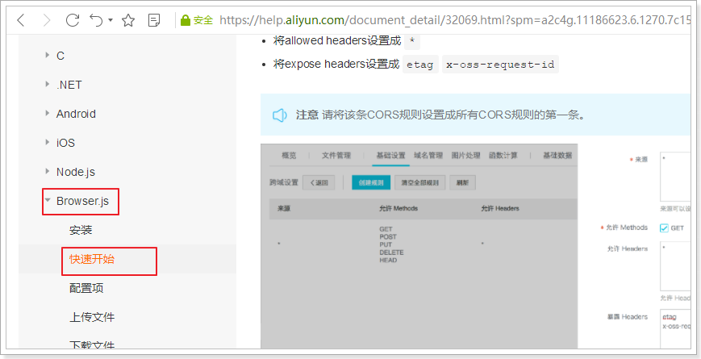
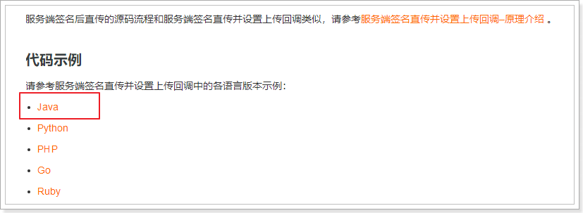
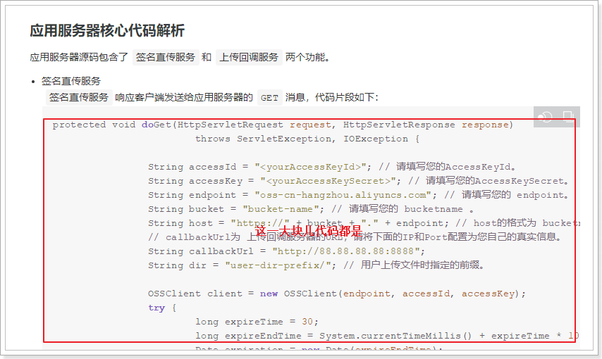
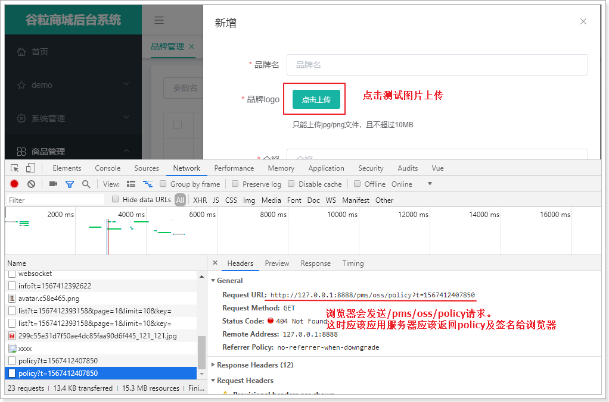
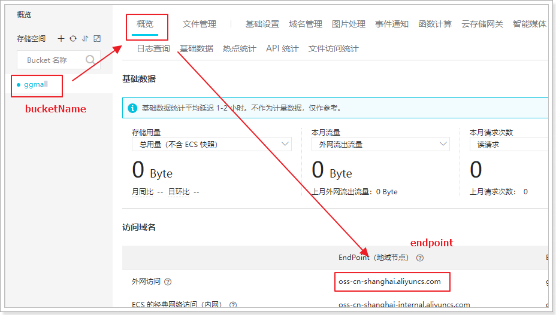

谷粒商城¶
1. 谷粒商城介绍¶
1.1. 项目分类¶
主要从需求方、盈利模式、技术侧重点这三个方面来看它们的不同
1.1.1. 传统项目¶
各种企业里面用的管理系统（ERP、HR、OA、CRM、物流管理系统。。。。。。。）
- 需求方：公司、企业内部
- 盈利模式：项目本身卖钱
- 技术侧重点：业务功能
1.1.2. 互联网项目¶
门户网站、电商网站：baidu.com、qq.com、taobao.com、jd.com ......
- 需求方：广大用户群体
- 盈利模式：虚拟币、增值服务、广告收益......
- 技术侧重点：网站性能、业务功能
而我们今天要聊的就是互联网项目中的重要角色：电商
1.2. 为什么我们要讲电商？¶
因为就互联网平台来说，电商网站有很多典型的特征：
- 访问量大
- 数据量大
- 有一定的业务复杂性
- 涉及支付 考虑一定安全性
1.3. 常见电商模式¶
电商行业的一些常见模式：
- B2C：商家对个人，如：亚马逊、当当等
- C2C平台：个人对个人，如：闲鱼、拍拍网、ebay
- B2B平台：商家对商家，如：阿里巴巴、八方资源网等
- O2O：线上和线下结合，如：饿了么、电影票、团购等
- P2P：在线金融，贷款，如：网贷之家、人人聚财等。
- B2C平台：天猫、京东、一号店等
2. 搭建项目¶
2.1. 项目结构说明¶
核心是microservice这块儿，它分两类微服务：
-
后台CRUD微服务
-
pms：商品管理系统（product） 18081
-
ums：用户管理系统（user）18082
-
wms：仓库管理系统（warehouse） 18083
-
oms：订单管理系统（order）18084
-
sms：营销管理系统（sale） 18085
。。。。
-
前台数据接口微服务
-
cart：购物车微服务
- order：订单微服务
- search：搜索微服务
- item：商品详情微服务
- member：会员微服务
第三方微服务：物流、短信、支付、云存储。。。。
数据层：mysql（分库分表中间件：Mycat）、redis、elasticsearch、rabbitmq、阿里OSS
后台管理前端：gmall-admin（1000）
前台门户：gmall-shop （2000）
网关：gmall-gateway（8888）
2.2. 数据准备¶
把课前资料中的数据文件导入数据库：
导入数据库之后：
2.3. 使用github创建仓库¶
克隆到本地：
开源协议参考：
2.4. 项目初始创建¶
把课前资料/基础工程中的文件
copy到 clone下来的gmall工程中
接下来在idea中导入gmall工程：
点击“OK”，一路下一步：
在idea的Terminal窗口，查看git状态：
把.idea/和gmall.iml添加到忽略列表：
推送到远程仓库：git push origin master
效果：
2.5. 依赖分析¶
gmall工程：是父工程，在pom.xml中统一管理了常用依赖的版本号
gmall-common：包含了通用的实体类及工具类，所有工程都依赖于该common工程
gmall-admin：后台管理控制台菜单管理系统。此项目不用关注，和业务无关。
springboot的常用依赖有：
- redis
- web
springCloud的常用依赖有：
- openfeign
- alibaba-nacos-discovery
- alibaba-nacos-config
- alibaba-sentinel
- zipkin等
需要链接数据库的工程需要引入mybatis相关依赖。
2.6. 创建项目其他模块¶
任何项目都要依赖common工程。
2.6.1. 创建商品管理模块¶
创建完成：
需要手动导入的依赖：
<dependency>
<groupId>com.atguigu</groupId>
<artifactId>gmall-common</artifactId>
<version>0.0.1-SNAPSHOT</version>
</dependency>
<dependency>
<groupId>com.baomidou</groupId>
<artifactId>mybatis-plus-boot-starter</artifactId>
</dependency>
<dependency>
<groupId>mysql</groupId>
<artifactId>mysql-connector-java</artifactId>
</dependency>
创建springboot工程，默认是以spring-boot-starter-parent为父工程，需要改为gmall为父工程：
<parent>
<groupId>com.atguigu</groupId>
<artifactId>gmall</artifactId>
<version>0.0.1-SNAPSHOT</version>
</parent>
并且把pms工程中的如下springCloud依赖管理去掉：
<spring-cloud-alibaba.version>2.2.0.RELEASE</spring-cloud-alibaba.version>
<spring-cloud.version>Hoxton.SR3</spring-cloud.version>
<dependencyManagement>
<dependencies>
<dependency>
<groupId>org.springframework.cloud</groupId>
<artifactId>spring-cloud-dependencies</artifactId>
<version>${spring-cloud.version}</version>
<type>pom</type>
<scope>import</scope>
</dependency>
<dependency>
<groupId>com.alibaba.cloud</groupId>
<artifactId>spring-cloud-alibaba-dependencies</artifactId>
<version>${spring-cloud-alibaba.version}</version>
<type>pom</type>
<scope>import</scope>
</dependency>
</dependencies>
</dependencyManagement>
2.6.2. 创建用户管理模块¶
其他项，参考商品管理模块。
2.6.3. 创建订单管理模块¶
其他项参考商品管理模块
2.6.4. 创建营销管理模块¶
2.6.5. 创建仓库管理模块¶
2.6.6. 完整工程¶
接下来把这些新模块push到github。
先添加忽略：
git add .
git commit -m "创建后台工程"
git push origin master
2.7. 逆向工程生成代码¶
课前资料/逆向工程：
copy到gmall项目下：
回到idea，把逆向工程作为maven工程导入idea
下面以生成pms的代码为例，其他模块操作类似！！！！！！！
2.7.1. 修改配置¶
修改逆向工程的application.yml，把数据库的连接信息改成自己的：
修改generator.properties：
2.7.2. 启动逆向工程¶
启动RenrenApplication：
启动成功，监听端口号为80。浏览器访问
生成一个压缩包，被下载下来：
即找到压缩包。
2.7.3. 把文件copy到对应工程¶
- 打开压缩包，压缩包/main/java下的com目录，copy到gmall-pms模块的src/main/java：
效果如下：

- 把压缩包/main/resources下的mapper目录，copy到gmall-pms模块的src/java/resources目录下：
如下：

2.8. 各个模块工程的配置¶
后台管理模块，每个工程的配置方式基本一样。下面还是以gmall-pms工程为例：
2.8.1. 工程参数配置¶
application.yml配置文件：
server:
port: 18081
spring:
cloud:
nacos:
discovery:
server-addr: 127.0.0.1:8848
sentinel:
transport:
dashboard: localhost:8080
port: 8719
datasource:
driver-class-name: com.mysql.jdbc.Driver
url: jdbc:mysql://172.16.116.100:3306/guli_pms?useUnicode=true&characterEncoding=UTF-8&useSSL=false
username: root
password: root
redis:
host: 172.16.116.100
zipkin:
base-url: http://localhost:9411
discovery-client-enabled: false
sender:
type: web
sleuth:
sampler:
probability: 1
mybatis-plus:
mapper-locations: classpath:mapper/pms/*.xml # 读取映射文件
type-aliases-package: com.atguigu.gmall.pms.entity
global-config:
db-config:
id-type: auto # 默认使用数据库自增
feign:
sentinel:
enabled: true
bootstrap.yml配置文件：
spring:
application:
name: pms-service
cloud:
nacos:
config:
server-addr: 127.0.0.1:8848
2.8.2. 在启动类上添加注解¶
在gmall-pms工程的启动类（GmallPmsApplication）上添加注解：
@SpringBootApplication
@MapperScan(basePackages = "com.atguigu.gmall.pms.mapper")
@EnableSwagger2
public class GmallPmsApplication {
public static void main(String[] args) {
SpringApplication.run(GmallPmsApplication.class, args);
}
}
使用mybatis-plus步骤：
- 配置目录中引入映射文件
- 在启动类上添加@MapperScan扫描所有mapper/dao接口
- 编写mapper接口实现BaseMapper
即可 - 编写service接口继承IService
，编写xxxService继承ServiceImpl - 查询分页要添加分页过滤器：
@Configuration
public class MybatisPlusConfig {
@Bean
public PaginationInterceptor paginationInterceptor() {
PaginationInterceptor paginationInterceptor = new PaginationInterceptor();
// 设置请求的页面大于最大页后操作， true调回到首页，false 继续请求 默认false
// paginationInterceptor.setOverflow(false);
// 设置最大单页限制数量，默认 500 条，-1 不受限制
// paginationInterceptor.setLimit(500);
// 开启 count 的 join 优化,只针对部分 left join
paginationInterceptor.setCountSqlParser(new JsqlParserCountOptimize(true));
return paginationInterceptor;
}
}
2.8.3. 配置到nacos¶
创建名称空间：
给pms添加配置：
修改bootstrap.yml配置：
spring:
application:
name: pms-service
cloud:
nacos:
config:
server-addr: 127.0.0.1:8848
namespace: 3aeaadb8-203f-44a1-a384-af429c486c0a
group: dev
file-extension: yml # 默认找服务名.properties文件
在GmallPmsApplication类上添加@RefreshScope注解：
2.9. 参照PMS完成其他管理模块¶
其他模块都按照gmall-pms的方式完成搭建。
所有后台管理模块，都需要完成以下操作：
-
逆向工程，copy生成的java文件及映射文件到对应的目录下
-
在pom.xml中配置父工程、去掉springCloud的版本管理、引入common工程及mybatis mysql的依赖
<!-- 所有后续创建的工程以该工程为父工程 -->
<parent>
<groupId>com.atguigu</groupId>
<artifactId>gmall</artifactId>
<version>0.0.1-SNAPSHOT</version>
</parent>
<!-- 添加common及mybatis mysql依赖 -->
<dependency>
<groupId>com.atguigu</groupId>
<artifactId>gmall-common</artifactId>
<version>0.0.1-SNAPSHOT</version>
</dependency>
<dependency>
<groupId>com.baomidou</groupId>
<artifactId>mybatis-plus-boot-starter</artifactId>
</dependency>
<dependency>
<groupId>mysql</groupId>
<artifactId>mysql-connector-java</artifactId>
</dependency>
<!-- 最后别忘了去掉springCloud的依赖管理，使用gmall父工程的依赖管理 -->
- 添加application.yml配置，建议把该配置放到nacos中。例如：
server:
port: 18081
spring:
cloud:
nacos:
discovery:
server-addr: 127.0.0.1:8848
sentinel:
transport:
dashboard: localhost:8080
port: 8719
datasource:
driver-class-name: com.mysql.jdbc.Driver
url: jdbc:mysql://172.16.116.100:3306/guli_pms?useUnicode=true&characterEncoding=UTF-8&useSSL=false
username: root
password: root
redis:
host: 172.16.116.100
zipkin:
base-url: http://localhost:9411
discovery-client-enabled: false
sender:
type: web
sleuth:
sampler:
probability: 1
mybatis-plus:
mapper-locations: classpath:mapper/pms/*.xml # 读取映射文件
type-aliases-package: com.atguigu.gmall.pms.entity
global-config:
db-config:
id-type: auto # 默认使用数据库自增
feign:
sentinel:
enabled: true
注意：不同模块需要修改server.port、spring.datasource.url以及mybatis-plus相关的值
- 添加bootstrap.yml配置，例如：
spring:
application:
name: pms-service
cloud:
nacos:
config:
server-addr: 127.0.0.1:8848
namespace: 3aeaadb8-203f-44a1-a384-af429c486c0a
group: dev
file-extension: yml # 默认找服务名.properties文件
注意：不同模块需要修改spring.application.name及spring.cloud.nacos.config.namespace的值
- 给引导类添加注解，例如：
@SpringBootApplication
@MapperScan(basePackages = "com.atguigu.gmall.pms.mapper")
@EnableSwagger2
@RefreshScope
public class GmallXxxApplication {
.....
}
注意：需要修改basePackages的值
2.10. 搭建网关服务¶
nacos容器内的所有服务，可以直接相互访问。nacos外的服务，为了保证安全，必须通过网关访问后台各个管理模块
pom.xml:
这里也要以gmall父工程为父，去掉cloud及alibaba版本号管理。
<?xml version="1.0" encoding="UTF-8"?>
<project xmlns="http://maven.apache.org/POM/4.0.0" xmlns:xsi="http://www.w3.org/2001/XMLSchema-instance"
xsi:schemaLocation="http://maven.apache.org/POM/4.0.0 https://maven.apache.org/xsd/maven-4.0.0.xsd">
<modelVersion>4.0.0</modelVersion>
<parent>
<groupId>com.atguigu</groupId>
<artifactId>gmall</artifactId>
<version>0.0.1-SNAPSHOT</version>
</parent>
<groupId>com.atguigu</groupId>
<artifactId>gmall-gateway</artifactId>
<version>0.0.1-SNAPSHOT</version>
<name>gmall-gateway</name>
<description>Demo project for Spring Boot</description>
<properties>
<java.version>1.8</java.version>
</properties>
<dependencies>
<dependency>
<groupId>com.alibaba.cloud</groupId>
<artifactId>spring-cloud-starter-alibaba-nacos-config</artifactId>
</dependency>
<dependency>
<groupId>com.alibaba.cloud</groupId>
<artifactId>spring-cloud-starter-alibaba-nacos-discovery</artifactId>
</dependency>
<dependency>
<groupId>org.springframework.cloud</groupId>
<artifactId>spring-cloud-starter-gateway</artifactId>
</dependency>
<dependency>
<groupId>org.springframework.boot</groupId>
<artifactId>spring-boot-starter-test</artifactId>
<scope>test</scope>
<exclusions>
<exclusion>
<groupId>org.junit.vintage</groupId>
<artifactId>junit-vintage-engine</artifactId>
</exclusion>
</exclusions>
</dependency>
</dependencies>
<build>
<plugins>
<plugin>
<groupId>org.springframework.boot</groupId>
<artifactId>spring-boot-maven-plugin</artifactId>
</plugin>
</plugins>
</build>
</project>
添加配置：
bootstrap.yml配置如下：
spring:
application:
name: gateway-api
cloud:
nacos:
config:
server-addr: 127.0.0.1:8848
application.yml配置如下：
server:
port: 8888
spring:
cloud:
nacos:
discovery:
server-addr: 127.0.0.1:8848
gateway:
routes:
- id: pms-route # 商品管理路由
uri: lb://pms-service
predicates:
- Path=/pms/**
- id: oms-route # 订单管理路由
uri: lb://oms-service
predicates:
- Path=/oms/**
- id: ums-route # 用户管理路由
uri: lb://ums-service
predicates:
- Path=/ums/**
- id: wms-route # 仓库管理路由
uri: lb://wms-service
predicates:
- Path=/wms/**
- id: sms-route # 营销管理路由
uri: lb://sms-service
predicates:
- Path=/sms/**
测试：
3. 通过域名访问¶
3.1. 统一环境¶
我们现在访问页面使用的是：http://localhost:8888
有没有什么问题？
实际开发中，会有不同的环境：
- 开发环境：自己的电脑
- 测试环境：提供给测试人员使用的环境
- 预发布环境：数据是和生成环境的数据一致，运行最新的项目代码进去测试
- 生产环境：项目最终发布上线的环境
如果不同环境使用不同的ip去访问，可能会出现一些问题。为了保证所有环境的一致，我们会在各种环境下都使用域名来访问。
我们将使用以下域名：
- 主域名是：gmall.com
- 管理系统域名：manage.gmall.com
- 网关域名：api.gmall.com
- ...
但是最终，我们希望这些域名指向的还是我们本机的某个端口。
那么，当我们在浏览器输入一个域名时，浏览器是如何找到对应服务的ip和端口的呢？
3.2. 域名解析¶
一个域名一定会被解析为一个或多个ip。这一般会包含两步：
- 本地域名解析
浏览器会首先在本机的hosts文件中查找域名映射的IP地址，如果查找到就返回IP ，没找到则进行域名服务器解析，一般本地解析都会失败，因为默认这个文件是空的。
- Windows下的hosts文件地址：C:/Windows/System32/drivers/etc/hosts
- Linux下的hosts文件所在路径： /etc/hosts
样式：
# My hosts
127.0.0.1 localhost
- 域名服务器（DNS）解析
本地解析失败，才会进行域名服务器解析，域名服务器就是网络中的一台计算机，里面记录了所有注册备案的域名和ip映射关系，一般只要域名是正确的，并且备案通过，一定能找到。
我们不可能去购买一个域名，因此我们可以伪造本地的hosts文件，实现对域名的解析。修改本地的host为：
172.16.116.100 api.gmall.com manager.gmall.com
172.16.116.100 www.gmall.com gmall.com static.gmall.com
172.16.116.100 search.gmall.com item.gmall.com sso.gmall.com cart.gmall.com
172.16.116.100 order.gmall.com payment.gmall.com
这样就实现了域名的关系映射了。
通过域名访问：
3.3. nginx反向代理¶
域名问题解决了，但是现在要访问后台页面，还得自己加上端口：http://api.gmall.com:8888。
这就不够优雅了。我们希望的是直接域名访问：http://api.gmall.com。这种情况下端口默认是80，而80端口只有一个，将来我们可能有多个工程需要通过域名访问，如何让多个工程都直接通过域名访问呢？
这里就要用到反向代理工具：Nginx
nginx安装：略。。。。。。
3.4. 配置反向代理¶
windows宿主机hosts文件，配置如下：
172.16.116.100 api.gmall.com manager.gmall.com
172.16.116.100 www.gmall.com gmall.com static.gmall.com
172.16.116.100 search.gmall.com item.gmall.com sso.gmall.com cart.gmall.com
172.16.116.100 order.gmall.com payment.gmall.com
注意：172.16.116.100改成你自己虚拟机的ip地址
修改nginx配置文件，完整配置如下：
#user nobody;
worker_processes 1;
#error_log logs/error.log;
#error_log logs/error.log notice;
#error_log logs/error.log info;
#pid logs/nginx.pid;
events {
worker_connections 1024;
}
http {
include mime.types;
default_type application/octet-stream;
#log_format main '$remote_addr - $remote_user [$time_local] "$request" '
# '$status $body_bytes_sent "$http_referer" '
# '"$http_user_agent" "$http_x_forwarded_for"';
#access_log logs/access.log main;
sendfile on;
#tcp_nopush on;
#keepalive_timeout 0;
keepalive_timeout 65;
#gzip on;
# 代理网关
server {
listen 80;
server_name api.gmall.com;
location / {
proxy_pass http://192.168.3.2:8888;
}
}
# 代理后台管理
server {
listen 80;
server_name manager.gmall.com;
location / {
proxy_pass http://192.168.3.2:1000;
}
}
}
重启nginx命令：nginx -s reload
启动nginx命令：nginx
在浏览器中测试，完美！
4. 系统管理前后端联调¶
4.1. 启动系统管理前端工程¶
把课前资料/前端工程/gmall-admin-vue.zip解压到工作空间下，例如：
这是一个用nodejs构建的项目，解压后进入项目根目录，打开cmd窗口执行：
npm install # 安装npm依赖包
npm start # 启动该项目
启动成功：
可以通过1000端口即可访问，这里推荐使用域名访问：
此时还不能登录，因为没有对应的后台管理系统。
4.2. 启动系统管理后台工程¶
要想正常登陆，并使用后台管理系统，还需要启动如下工程
启动前，需要修改配置：
数据库连接信息：
然后开始启动gmall-admin工程，启动成功后，刷新管理前端页面即可通过admin/admin登录
打开品牌管理试试：
这时，你使用浏览器直接访问品牌查询接口，发现访问没事，但是这里却报错，什么原因？
这其实是浏览器的同源策略造成的跨域问题。
5. 跨域问题¶
跨域：浏览器对于javascript的同源策略的限制 。
以下情况都属于跨域：
| 跨域原因说明 | 示例 |
|---|---|
| 域名不同 | www.jd.com 与 www.taobao.com |
| 域名相同，端口不同 | www.jd.com:8080 与 www.jd.com:8081 |
| 二级域名不同 | item.jd.com 与 miaosha.jd.com |
如果**域名和端口都相同，但是请求路径不同**，不属于跨域，如：
www.jd.com/item
www.jd.com/goods
http和https也属于跨域
而我们刚才是从manager.gmall.com去访问api.gmall.com，这属于端口不同，跨域了。
5.1. 为什么有跨域问题？¶
跨域不一定都会有跨域问题。
因为跨域问题是浏览器对于ajax请求的一种安全限制：一个页面发起的ajax请求，只能是与当前页域名相同的路径，这能有效的阻止跨站攻击。
因此：跨域问题 是针对ajax的一种限制。
但是这却给我们的开发带来了不便，而且在实际生产环境中，肯定会有很多台服务器之间交互，地址和端口都可能不同，怎么办？
5.2. 解决跨域问题的方案¶
目前比较常用的跨域解决方案有3种：
- Jsonp
最早的解决方案，利用script标签可以跨域的原理实现。
限制：
- 需要服务的支持
-
只能发起GET请求
-
nginx反向代理
思路是：利用nginx把跨域反向代理为不跨域，支持各种请求方式
缺点：需要在nginx进行额外配置，语义不清晰
- CORS
规范化的跨域请求解决方案，安全可靠。
优势：
- 在服务端进行控制是否允许跨域，可自定义规则
- 支持各种请求方式
缺点：
- 会产生额外的请求
我们这里会采用cors的跨域方案。
5.3. 什么是cors¶
CORS是一个W3C标准，全称是"跨域资源共享"（Cross-origin resource sharing）。
它允许浏览器向跨源服务器，发出XMLHttpRequest请求，从而克服了AJAX只能同源使用的限制。
CORS需要浏览器和服务器同时支持。目前，所有浏览器都支持该功能，IE浏览器不能低于IE10。
- 浏览器端：
目前，所有浏览器都支持该功能（IE10以下不行）。整个CORS通信过程，都是浏览器自动完成，不需要用户参与。
- 服务端：
CORS通信与AJAX没有任何差别，因此你不需要改变以前的业务逻辑。只不过，浏览器会在请求中携带一些头信息，我们需要以此判断是否允许其跨域，然后在响应头中加入一些信息即可。这一般通过过滤器完成即可。
5.4. 原理有点复杂¶
预检请求
跨域请求会在正式通信之前，增加一次HTTP查询请求，称为"预检"请求（preflight）。
浏览器先询问服务器，当前网页所在的域名是否在服务器的许可名单之中，以及可以使用哪些HTTP动词和头信息字段。只有得到肯定答复，浏览器才会发出正式的XMLHttpRequest请求，否则就报错。
一个“预检”请求的样板：
OPTIONS /cors HTTP/1.1
Origin: http://localhost:1000
Access-Control-Request-Method: GET
Access-Control-Request-Headers: X-Custom-Header
User-Agent: Mozilla/5.0...
-
Origin：会指出当前请求属于哪个域（协议+域名+端口）。服务会根据这个值决定是否允许其跨域。
-
Access-Control-Request-Method：接下来会用到的请求方式，比如PUT
- Access-Control-Request-Headers：会额外用到的头信息
预检请求的响应
服务的收到预检请求，如果许可跨域，会发出响应：
HTTP/1.1 200 OK
Date: Mon, 01 Dec 2008 01:15:39 GMT
Server: Apache/2.0.61 (Unix)
Access-Control-Allow-Origin: http://miaosha.jd.com
Access-Control-Allow-Credentials: true
Access-Control-Allow-Methods: GET, POST, PUT
Access-Control-Allow-Headers: X-Custom-Header
Access-Control-Max-Age: 1728000
Content-Type: text/html; charset=utf-8
Content-Encoding: gzip
Content-Length: 0
Keep-Alive: timeout=2, max=100
Connection: Keep-Alive
Content-Type: text/plain
如果服务器允许跨域，需要在返回的响应头中携带下面信息：
- Access-Control-Allow-Origin：可接受的域，是一个具体域名或者*（代表任意域名）
- Access-Control-Allow-Credentials：是否允许携带cookie，默认情况下，cors不会携带cookie，除非这个值是true
- Access-Control-Allow-Methods：允许访问的方式
- Access-Control-Allow-Headers：允许携带的头
- Access-Control-Max-Age：本次许可的有效时长，单位是秒，过期之前的ajax请求就无需再次进行预检了
有关cookie：
要想操作cookie，需要满足3个条件：
- 服务的响应头中需要携带Access-Control-Allow-Credentials并且为true。
- 浏览器发起ajax需要指定withCredentials 为true
- 响应头中的Access-Control-Allow-Origin一定不能为*，必须是指定的域名
5.5. 实现非常简单¶
虽然原理比较复杂，但是前面说过：
- 浏览器端都有浏览器自动完成，我们无需操心
- 服务端可以通过拦截器统一实现，不必每次都去进行跨域判定的编写。
事实上，Spring已经帮我们写好了CORS的跨域过滤器，内部已经实现了刚才所讲的判定逻辑。
spring-webmvc：CorsFilter
spring-webflux：CorsWebFilter
springcloud-gateway集成的是webflux，所以这里使用的是CorsWebFilter
在gmall-gateway中编写一个配置类，并且注册CorsWebFilter：
@Configuration
public class CorsConfig {
@Bean
public CorsWebFilter corsWebFilter() {
// 初始化CORS配置对象
CorsConfiguration config = new CorsConfiguration();
// 允许的域,不要写*，否则cookie就无法使用了
config.addAllowedOrigin("http://manager.gmall.com");
config.addAllowedOrigin("http://www.gmall.com");
// 允许的头信息
config.addAllowedHeader("*");
// 允许的请求方式
config.addAllowedMethod("*");
// 是否允许携带Cookie信息
config.setAllowCredentials(true);
// 添加映射路径，我们拦截一切请求
UrlBasedCorsConfigurationSource corsConfigurationSource = new UrlBasedCorsConfigurationSource();
corsConfigurationSource.registerCorsConfiguration("/**", config);
return new CorsWebFilter(corsConfigurationSource);
}
}
测试：完美解决！
6. 图片上传¶
这里使用阿里云对象存储（OSS）
官方文档：https://help.aliyun.com/document_detail/64041.html?spm=5176.87240.400427.54.1bfd4614VN7fDp
我们之前采用sdk的方式，图片→后台服务器→阿里云。
这样后台服务器面临并发压力，既然是上传给阿里云，可不可以直接传给阿里云服务器。
上传成功后，只需要给我一个图片地址保存到数据库即可。
查看官方文档，发现提供了浏览器直接上传到阿里云的参考文档：

6.1. 阿里云配置¶
登录到个人阿里云控制台，并创建bucket。

找到基础设置→跨域设置
点击设置→创建规则→如下填写表单→点击确定

6.2. 服务端签名后直传¶

用户发送请求到应用服务端，服务端怎么返回policy和签名？
官方文档再往下翻，有java示例：

点进去就有示例代码：

6.3. 编写代码实现签名获取¶

请求路径：/pms/oss/policy
请求方式：GET
请求参数：无
响应数据：统一都是Resp对象
6.3.1. 导入OSS的依赖¶
<dependency>
<groupId>com.aliyun.oss</groupId>
<artifactId>aliyun-sdk-oss</artifactId>
<version>3.5.0</version>
</dependency>
6.3.2. 编写Controller方法¶
@RequestMapping("pms/oss")
@RestController
public class PmsOssController {
String accessId = "LTAI4FuGwRrRAh1M8mRkndr6"; // 请填写您的AccessKeyId。
String accessKey = "LvIZkyPyKqoBGcVTY2wABYhv4QJmYT"; // 请填写您的AccessKeySecret。
String endpoint = "oss-cn-shanghai.aliyuncs.com"; // 请填写您的 endpoint。
String bucket = "ggmall"; // 请填写您的 bucketname 。
String host = "https://" + bucket + "." + endpoint; // host的格式为 bucketname.endpoint
// callbackUrl为 上传回调服务器的URL，请将下面的IP和Port配置为您自己的真实信息。
//String callbackUrl = "http://88.88.88.88:8888";
// 图片目录，每天一个目录
SimpleDateFormat sdf = new SimpleDateFormat("yyyy-MM-dd");
String dir = sdf.format(new Date()); // 用户上传文件时指定的前缀。
@GetMapping("policy")
public ResponseVo<Object> policy() throws UnsupportedEncodingException {
OSSClient client = new OSSClient(endpoint, accessId, accessKey);
long expireTime = 30;
long expireEndTime = System.currentTimeMillis() + expireTime * 1000;
Date expiration = new Date(expireEndTime);
PolicyConditions policyConds = new PolicyConditions();
policyConds.addConditionItem(PolicyConditions.COND_CONTENT_LENGTH_RANGE, 0, 1048576000);
policyConds.addConditionItem(MatchMode.StartWith, PolicyConditions.COND_KEY, dir);
String postPolicy = client.generatePostPolicy(expiration, policyConds);
byte[] binaryData = postPolicy.getBytes("utf-8");
String encodedPolicy = BinaryUtil.toBase64String(binaryData);
String postSignature = client.calculatePostSignature(postPolicy);
Map<String, String> respMap = new LinkedHashMap<String, String>();
respMap.put("accessid", accessId);
respMap.put("policy", encodedPolicy);
respMap.put("signature", postSignature);
respMap.put("dir", dir);
respMap.put("host", host);
respMap.put("expire", String.valueOf(expireEndTime / 1000));
// respMap.put("expire", formatISO8601Date(expiration));
return ResponseVo.ok(respMap);
}
}
6.3.3. 上传测试¶


6.4. 参数说明¶
6.4.1. AccessKeyID及AccessKeySecret¶


选择用户，添加权限：

选择OSS所有权限
完成权限的添加
6.4.2. bucktName及EndPoint¶

6.4.3. 公共读权限¶
为了方便回显，需要把读写权限改为公共读

本文总阅读量次